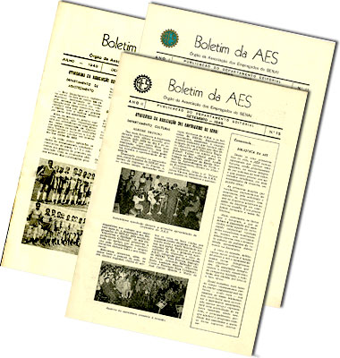
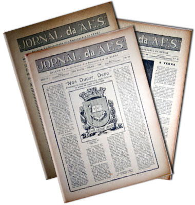
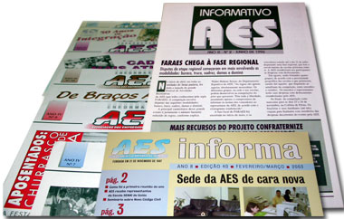
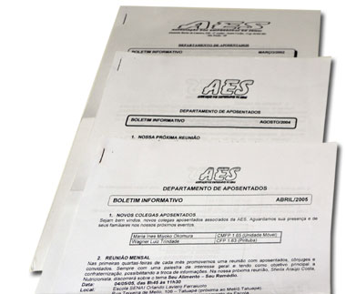
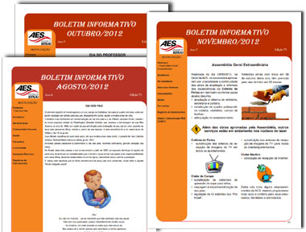
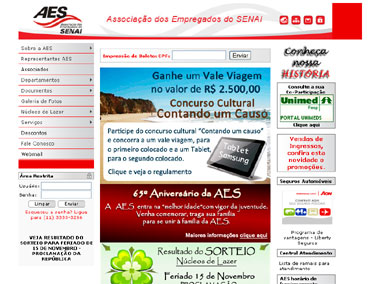
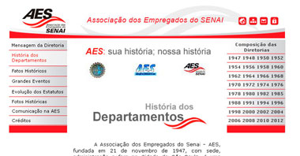
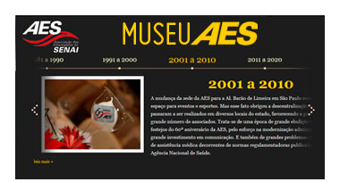
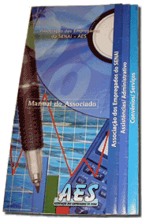
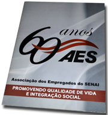

Comunicação é importante? Saiba que nossos registros apontam que os melhores momentos da AES ocorreram quando possuíamos veículos de comunicação estáveis e regulares. Todos ganham com a manutenção de um sistema bem estruturado: os administradores da Associação têm mais contato com os associados, a AES fortalece suas estruturas, os associados passam a ter mais informações e poder de mobilização e os registros obtidos permitem a consolidação de nossa história.
O Sistema de Comunicação da AES evoluiu muito desde a fundação da Associação em 1947 e atualmente, além dos Comunicados e Circulares, contamos com a publicação mensal do Boletim Informativo, com o Site (bastante interativo) e com o Sistema de Mensagens Instantâneas.
Uma passagem pela história das publicações da AES revela as iniciativas da Associação nesse campo, as principais características de seus veículos e, acima de tudo, nos permite compreender como chegamos à condição atual; vamos a ela...
Boletim da AES
Em janeiro de 1948 foi publicado o primeiro Boletim da AES, ainda com título provisório. Com suas quatro páginas e uma composição tipográfica esmerada trazia as notícias dos Departamentos da Associação e também notas sociais informando sobre aniversários, esponsais e até o nascimento de filhos de associados. Seu estilo redacional era formal e perfeitamente alinhado ao padrão SENAI o que, entretanto, não impedia uma agradável variação de linguagem: ora em um tom mais coloquial e ora em um tom mais fino e rebuscado. Desde seu princípio essa publicação adotou uma postura propositiva e suas 12 edições iniciais mantiveram periodicidade mensal. Ao todo essa publicação rendeu 28 edições, sendo a última datada de setembro de 1951. Vale lembrar que em novembro de 1948 o Boletim da AES assumiu a condição de Órgão Oficial da AES com o título definitivo escolhido pelos associados. Essa edição de número 11 foi pioneira no uso do logotipo da AES: a tradicional engrenagem de 21 dentes. O Boletim da AES atuou como o principal instrumento para a consolidação da AES.

Jornal da AES
Em julho de 1954 criou-se o Jornal da AES - uma publicação no formato tabloide com tiragem de 1.500 exemplares. De início sua periodicidade era mensal, evoluindo para bimestral e finalizando como quadrimestral. Muito bem produzido, além das notícias da Associação, veiculava inúmeras notas culturais enviadas pelos associados. Esse Jornal contava com bastante espaço para matérias e ilustrações de modo que houve edições que circularam com até dezesseis páginas. Seu custo de produção era alto comparando-se com a verba social da AES, porém era amortizado pela venda de espaço publicitário para empresas parceiras. Em seus mais de sete anos de existência o Jornal da AES rendeu 27 edições, a última datada de dezembro de 1961, documentando uma fase importante da história da Associação e sempre valorizando a parceria com o SENAI. Curiosamente, o Jornal não utilizava o logotipo da AES em seu cabeçalho já que este aparecia apenas na coluna de expediente, porém mantinha sua posição firme no desenvolvimento do Associativismo entre os empregados do SENAI - que é a marca de nossa Associação.

Publicações do SENAI
Durante a ausência de um Órgão Oficial da AES o Informativo SENAI, que era uma publicação regular do SENAI-SP, reservava uma seção para a veiculação das notícias de interesse da AES. Essa fase ficou marcada pelo aspecto mais institucional da comunicação que, obviamente, perdeu muito de sua espontaneidade. O foco passou a ser dirigido para a prestação de contas da Diretoria da AES e sobre alguns serviços, incluindo os balanços da CABES (Caixa Beneficente dos Empregados do SENAI) financiada pelo SENAI e administrada pela Associação. Ainda assim, tendo como justificativa a proximidade entre a AES e o SENAI, eram noticiados os passeios, os encontros e outros acontecimentos relacionados aos associados da AES.
Mais tarde, na década de 1970, o SENAI criou o jornal Comunicação SENAI - uma peça muito bem diagramada e com farta ilustração.
Na década de 1980 o SENAI passou a distribuir também o Informando - um boletim que cedia espaço para a associação. Nestes dois veículos a matéria sobre a AES estava longe de uma função mais prática e apresentava um estilo bem parecido com as grandes reportagens. Ainda assim, era muito importante para todos manter a divulgação da AES.
Informativo AES
Em outubro de 1994 foi criado o Informativo AES - um boletim de divulgação das atividades de nossa Associação. O lançamento desse veículo reinaugurou a comunicação entre a AES e seus associados. A periodicidade predominante era bimestral e esse veículo manteve-se regular por mais de oito anos totalizando 43 edições. Sua composição e diagramação eram bem cuidadas. A divulgação de eventos passou a ser regra, incentivando e apoiando novas iniciativas. A edição de setembro de 1996 circulou com o 2º logotipo oficial da AES que era grafado em tom azul em degradê.

AES Informa
Em março de 2003 o Informativo AES mudou seu nome para AES Informa, porém mantendo a numeração original. Passou a contar com uma diagramação em grande estilo e assumiu de vez seu papel mais institucional. Registra a linha de atuação dos órgãos que compõem o Corpo de Administração da Associação, suas políticas e os resultados alcançados em longo prazo, enfatizando os eventos passados. No princípio sua periodicidade era trimestral passando a duas edições por ano até abril de 2011 quando da publicação de sua última edição.
Boletim Informativo da AES
Em setembro de 1997 surgiu o Boletim Informativo da AES para atender a demanda de informações manifestada pelos associados aposentados do SENAI. A remessa mensal dos boletos de cobrança das mensalidades para a casa desses associados viabilizou a abertura desse importante canal. O Boletim Informativo da AES precisava ser ágil e por esse motivo sua apresentação era simples - o que contava era o seu conteúdo. Sem numeração, as edições do Boletim Informativo eram referenciadas apenas pelo mês e ano. A funcionalidade do Boletim Informativo com periodicidade mensal ficou patente e rapidamente ele se transformou em um veículo de informação e de mobilização resultando na integração efetiva dos associados aposentados.

Boletim Informativo como principal veículo de comunicação da AES
Em agosto de 2006 a Associação ampliou suas estratégias de comunicação e transformou o Boletim Informativo da AES, antes restrito aos associados aposentados, em seu principal veículo de comunicação prática. Essa publicação mensal passou a ser enviada à residência de cada um dos associados (na época 5.885 sócios) envolvendo todas as notícias da Associação. Essa nova estratégia contribuiu para estreitar o relacionamento associativo, possibilitando uma maior participação dos associados e seus familiares nos eventos da AES. A edição de agosto de 2006 foi a primeira a utilizar o novo logotipo da AES.

A publicação da 1ª edição do novo Boletim Informativo da AES constituiu-se como o marco do resgate da comunicação de caráter prático pela AES.
AES na Internet - Site da AES
Em 2001 a AES criou seu Site na Internet. Este, porém, era corporativo sem integração com os dados dos associados e relativamente pobre em informações. Com o registro do novo domínio aessenai.org.br o Site da AES começou a ganhar algumas funcionalidades, porém estava longe de ser um instrumento de gestão integrado aos serviços da AES.

Site da AES - Novo Contexto
Em 2006 foi introduzida uma importante inovação no Site da AES na Internet www.aessenai.org.br. O visual ficou moderno, assumindo as novas cores da AES e a navegação ficou extremamente simplificada e rápida. Além das informações gerais acessíveis pela página inicial, os associados contam com a possibilidade de adentrar a área restrita, onde podem conferir dados de seu cadastro, dependentes, serviços adquiridos, informações sobre os boletos, lançamentos mês-a-mês, visualizar documentos e efetuar a inscrição para as áreas de lazer.

Em julho de 2009 foi publicado o Site Histórico da AES. Constituído por diferentes cronologias, dá uma visão consistente da história da Associação. O "sistema de links" utilizado em nosso Site Histórico torna a navegação bem simples e permite que de qualquer ponto você alcance qualquer página do Site.

Em outubro de 2014 foi disponibilizado no Site da AES o link Museu AES que permite uma passagem pelos fatos históricos da Associação distribuídos na “linha do tempo” e por um interessante conjunto de fotos agrupadas por temas.
Outras publicações da AES
O Guia do Associado foi lançado em julho de 2001 e reeditado em novembro de 2008

O Guia do Associado é um manual em formato de folder, com várias abas, que permite a fácil consulta para as áreas Assistencial, Administrativa, Convênios e Serviços.
Fornece indicações claras para a utilização das áreas de Lazer da Associação.
Esse manual permite a consulta instantânea de todas as facilidades oferecidas pela AES.
Revista "AES 60 Anos", publicada em novembro de 2007

Ao comemorar seus 60 anos de fundação, a AES distribuiu a Revista "AES 60 Anos".
Com 36 páginas, essa edição mostrava uma resenha histórica muito bem elaborada da Associação.
A versão digital desse documento pode ser vista no endereço:
http://issuu.com/take-a-coffee/docs/aes60anos
Explorando outras mídias - SMS
Em junho de 2011 a AES implantou o sistema de envio de mensagens instantâneas tipo SMS (vulgarmente conhecidos como torpedos) para telefones móveis. A sugestão de utilização desse serviço partiu dos funcionários da Secretaria da Associação e vem ao encontro da política da Diretoria de tornar mais eficaz a comunicação com os representantes e com os associados da AES. Os testes iniciais com esse novo canal de comunicação foram feitos na comunicação com os representantes. A extensão desse serviço aos associados permite a comunicação de resultados de inscrições e sorteios. Por questões éticas e legais esse serviço somente é acessível aos associados que disponibilizam o número de seu telefone celular.
<
Voltar ao topo
|